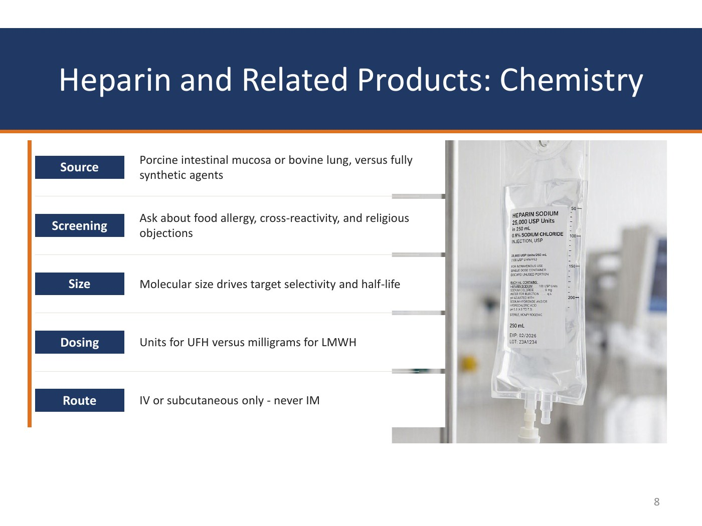
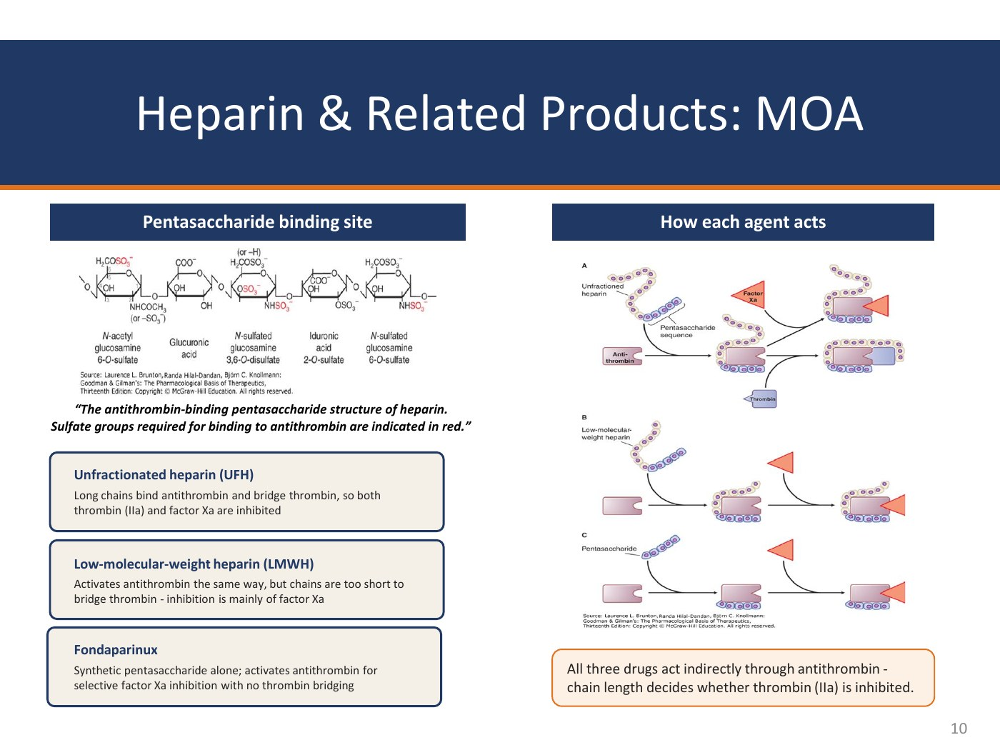
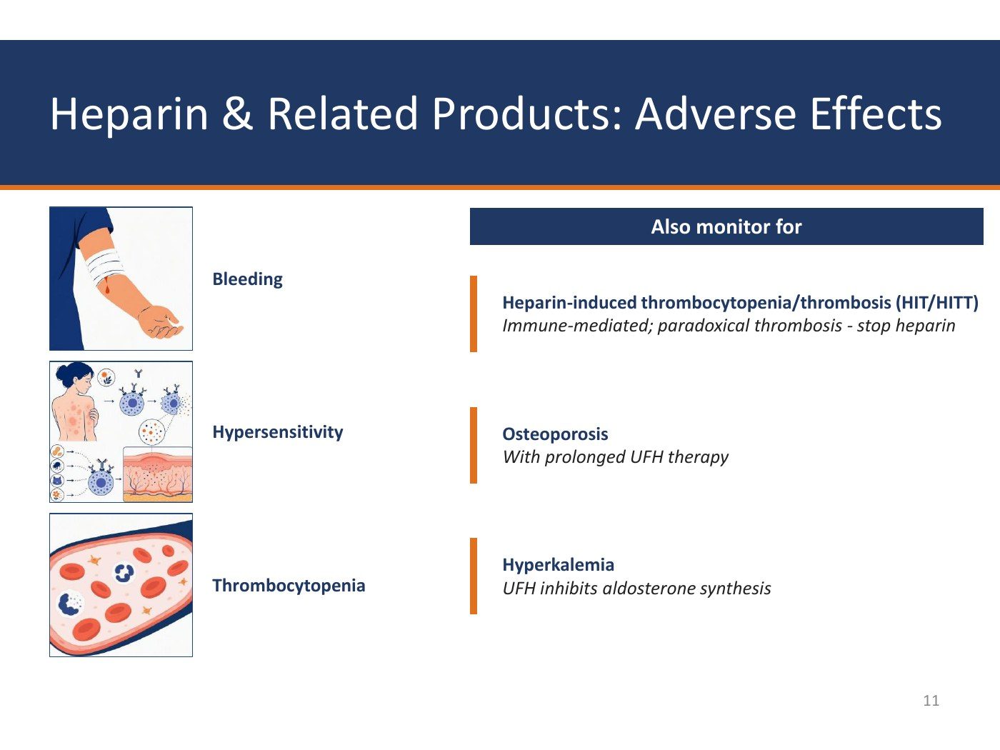
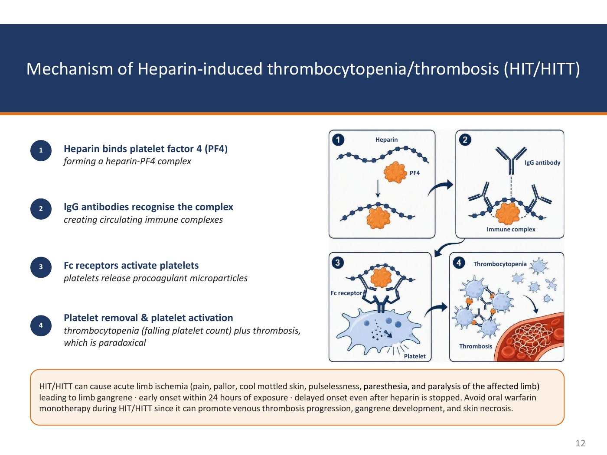

Slides 7–18 · Heparin, enoxaparin, fondaparinux
Indirect Thrombin & Factor Xa Inhibitors
Chemistry — five things that matter clinically

Source
Porcine intestinal mucosa or bovine lung, versus fully synthetic agents (fondaparinux)
Screening
Ask about food allergy, cross-reactivity, and religious objections — this is an animal-derived product
Size
Molecular size drives target selectivity and half-life
Dosing
Units for unfractionated heparin versus milligrams for low-molecular-weight heparin
Route
Intravenous or subcutaneous only — never intramuscular
An intramuscular injection of an anticoagulant produces a haematoma at the injection site. The same principle reappears in the warfarin reversal section: vitamin K is not given intramuscularly because of haematoma risk in an anticoagulated patient.
Pharmacokinetics — the table that explains everything else
| Feature | Heparin (UFH) | LMWH (enoxaparin) | Fondaparinux |
|---|---|---|---|
| Source | Biological | Biological | Synthetic |
| Mean molecular weight (daltons) | 15,000 | 5,000 | 1,500 |
| Target | Xa and IIa | Xa and IIa (mainly Xa) | Xa only |
| Subcutaneous | Yes (also intravenous) | Yes | Yes |
| Bioavailability | 30% (at low doses) | 90% | 100% |
| Half-life | 1–8 hours — dose-dependent: 1 hr at 5,000 units subcutaneously, up to 8 hr at higher doses | 4 hours | 17 hours |
| Renal excretion | No | Yes | Yes |
| Antidote effect (protamine sulfate) | Complete | Partial | None |
| Non-immune heparin-associated thrombocytopenia | < 5% | < 1% | < 0.1% |
As molecular size falls (15,000 → 5,000 → 1,500 daltons): bioavailability rises (30% → 90% → 100%), half-life lengthens (1–8 h → 4 h → 17 h), renal clearance appears, thrombocytopenia risk falls (<5% → <1% → <0.1%), and protamine reversal is lost (complete → partial → none). Learn the direction of the gradient and you can reconstruct the whole table.
Mechanism of action — chain length decides the target

- Unfractionated heparin (UFH). Long chains bind antithrombin and bridge thrombin, so both thrombin (IIa) and factor Xa are inhibited. The bridge is a physical requirement — you need enough chain to hold antithrombin and thrombin together at once.
- Low-molecular-weight heparin (LMWH). Activates antithrombin the same way, but the chains are too short to bridge thrombin — inhibition is mainly of factor Xa.
- Fondaparinux. The synthetic pentasaccharide alone; activates antithrombin for selective factor Xa inhibition with no thrombin bridging.
All three drugs act indirectly through antithrombin — chain length decides whether thrombin (IIa) is also inhibited. The antithrombin-binding pentasaccharide sequence is common to all three; the sulfate groups shown in red on the structure are the ones required for antithrombin binding. What differs is only how much chain is left over to reach thrombin.
Adverse effects

Bleeding
Reverse with protamine sulfate
HIT / HITT
Immune-mediated; paradoxical thrombosis — stop heparin
Hypersensitivity
Screen for allergy before use
Thrombocytopenia
<5% UFH, <1% LMWH, <0.1% fondaparinux
Osteoporosis
With prolonged unfractionated heparin therapy
Hyperkalaemia
Unfractionated heparin inhibits aldosterone synthesis
HIT / HITT — the mechanism, in four steps

- Heparin binds platelet factor 4 (PF4), forming a heparin–PF4 complex.
- IgG antibodies recognise the complex, creating circulating immune complexes.
- Fc receptors activate platelets — platelets release procoagulant microparticles.
- Platelet removal and platelet activation together produce thrombocytopenia (a falling platelet count) plus thrombosis, which is paradoxical.
Acute limb ischaemia — pain, pallor, cool mottled skin, pulselessness, paresthesia and paralysis of the affected limb — leading to limb gangrene.
Early onset within 24 hours of exposure in a previously sensitised patient; delayed onset even after heparin is stopped.
Avoid oral warfarin monotherapy during HIT/HITT — it can promote venous thrombosis progression, gangrene development and skin necrosis.
Warfarin blocks γ-carboxylation of protein C as well as of factors II, VII, IX and X — and protein C has a half-life of only 8 hours, far shorter than factor II's 60 hours. So the first effect of warfarin is to remove the body's anticoagulant before it removes the procoagulants: a transient hypercoagulable state. Superimpose that on the intensely prothrombotic state of HIT and you get gangrene and skin necrosis.
HIT / HITT — recognise, stop, treat
![Two-column slide on HIT monitoring and management: monitoring covers baseline platelet count, rechecking every two to three days from day four to fourteen, suspecting HIT with a platelet fall over 50 percent typically 5 to 10 days after exposure, scoring with the 4Ts, confirming with anti-PF4 ELISA and verifying with a serotonin release assay; management covers stopping all heparin, starting a non-heparin anticoagulant, avoiding prophylactic platelet transfusion, delaying warfarin until platelets recover then overlapping five days, and continuing anticoagulation four weeks or three months](img/anticoagulants/hit-monitoring-management-4ts.jpg)
Monitoring
- Baseline platelet count before heparin; recheck every 2–3 days from day 4 to day 14 in higher-risk patients
- Suspect HIT with a fall in platelets of more than 50% from baseline, typically 5–10 days after exposure
- Score clinical probability with the 4Ts
- Confirm with the anti-PF4 (heparin-induced platelet antibody) test — an immunologic enzyme-linked immunosorbent assay (ELISA) detecting IgG antibodies against the platelet factor 4 / heparin complex
- Verify positives with a functional serotonin release assay (SRA), which measures heparin-dependent platelet activation
- Examine for new venous or arterial thrombosis, limb ischaemia, and skin lesions at injection sites
Management
- Stop all heparin immediately — including LMWH, flushes, and heparin-bonded catheters
- Start a non-heparin anticoagulant — argatroban, bivalirudin or fondaparinux. Observation alone is not enough
- Avoid prophylactic platelet transfusion unless the patient is bleeding
- Delay warfarin until platelets recover (> 150,000/µL), then overlap at least 5 days. NEVER use warfarin monotherapy during HIT/HITT
- Continue anticoagulation about 4 weeks without thrombosis and 3 months with thrombosis; document the reaction
0–2 points each; 6–8 = high, 4–5 = intermediate, 0–3 = low probability.
- Thrombocytopenia — extent of the platelet fall
- Timing of the fall — days 5–10
- Thrombosis or other sequelae
- oTher causes of thrombocytopenia absent
Contraindications, warnings, uses, pregnancy, monitoring and reversal
| Contraindications | US Boxed Warning |
|---|---|
| Spinal / epidural haematoma |
| Heparin (UFH) | Enoxaparin (LMWH) | Fondaparinux | |
|---|---|---|---|
| Clinical uses | VTE prophylaxis; DVT and PE treatment · acute coronary syndrome · ischaemic stroke or TIA | VTE prophylaxis; DVT and PE treatment · acute coronary syndrome · atrial fibrillation | VTE prophylaxis, including orthopaedic surgery · DVT and PE treatment |
| Shared uses | Venous thromboembolism prophylaxis · deep vein thrombosis and pulmonary embolism treatment | ||
| Pregnancy | Use in pregnancy — YES. Heparins do not cross the placenta; they are the anticoagulant of choice in pregnancy | ||
| Monitoring | aPTT (activated partial thromboplastin time) · anti-factor Xa | Routine coagulation monitoring not required; anti-factor Xa in select patients (renal impairment, obesity, pregnancy) | Routine coagulation monitoring not required; anti-factor Xa if needed |
| Monitor in all three | Platelet count · haemoglobin and haematocrit (H/H) | ||
| Toxicity reversal | Protamine reverses the effects of heparin — lessens the risk of serious bleeding from excessive UFH | Protamine only partially reverses the effects of LMWH | Protamine does not affect the action of fondaparinux |
Full for unfractionated heparin · partial for low-molecular-weight heparin · none for fondaparinux. This maps exactly onto molecular size, and it is the single most commonly tested reversal fact in the section. If a question gives you a bleeding patient on fondaparinux and offers protamine, protamine is wrong.
Q: On day 7 of unfractionated heparin, a patient's platelet count falls from 240,000 to 90,000/µL and a new deep vein thrombosis is found in the opposite leg. What is the diagnosis, what do you stop, and what do you start?
Heparin-induced thrombocytopenia with thrombosis (HITT). The 4Ts are all satisfied: a fall of more than 50% from baseline, timing at days 5–10, new thrombosis, and no other cause. Stop all heparin — including low-molecular-weight heparin, flushes, and heparin-bonded catheters. Start a non-heparin anticoagulant: argatroban, bivalirudin or fondaparinux; observation alone is not enough. Confirm with the anti-PF4 ELISA and verify with the serotonin release assay. Do not give a prophylactic platelet transfusion unless the patient is bleeding, and do not start warfarin until platelets recover above 150,000/µL — then overlap at least 5 days. Continue anticoagulation about 3 months because thrombosis is present.
Q: Why does unfractionated heparin prolong the aPTT while enoxaparin generally does not?
The activated partial thromboplastin time is sensitive to thrombin (factor IIa) inhibition. Unfractionated heparin's long chains bridge antithrombin to thrombin, inhibiting both IIa and Xa, so the aPTT is prolonged and can be used to monitor. Enoxaparin's chains are too short to bridge thrombin, so it inhibits mainly factor Xa and leaves the aPTT largely untouched — which is why routine coagulation monitoring is not required for LMWH and, when monitoring is needed (renal impairment, obesity, pregnancy), you measure anti-factor Xa instead.
Q: A patient on long-term unfractionated heparin develops a potassium of 5.9 mmol/L with normal renal function. Why?
Unfractionated heparin inhibits aldosterone synthesis, producing hyperkalaemia. It is listed on the adverse-effects slide alongside osteoporosis with prolonged unfractionated heparin therapy — the two “also monitor for” items that are easy to forget because they are not bleeding and not HIT.

![Slide showing the coagulation cascade with rivaroxaban inhibiting factor X and dabigatran inhibiting factor II, alongside five numbered mechanism steps: absorbed orally and binds factor Xa directly with no antithrombin cofactor required; occupies the active site of free and clot-bound prothrombinase factor Xa; blocks conversion of prothrombin to thrombin; less thrombin generated so less fibrinogen converted to fibrin; and reduced fibrin formation and thrombin-mediated platelet activation limits clot growth](img/anticoagulants/factor-xa-inhibitors-moa.jpg)
![Slide on direct oral factor Xa inhibitor reversal noting andexanet alfa Andexxa was voluntarily removed from the market by AstraZeneca on December 22 2025, describing it as recombinant inactivated coagulation factor Xa indicated for life-threatening bleeding with a boxed warning for thromboembolic and ischaemic risks, cardiac arrest and sudden death, plus prothrombin complex concentrates which may be prothrombotic and pro-haemostatic antifibrinolytic agents tranexamic acid versus aminocaproic acid](img/anticoagulants/factor-xa-toxicity-reversal.jpg)